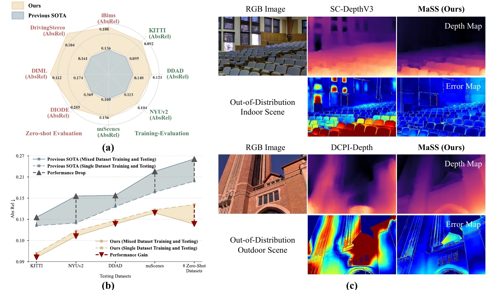
Learning to Discriminate Scene Structures Makes Self-Supervised Depth Learning Scalable
NeurIPS 2026
Learning transferable scene structures makes self-supervised depth estimation benefit from diverse, mixed-domain training data.
I am a Ph.D. student in Intelligent Science and Technology at Tongji University, advised by Prof. Rui Fan. I received my bachelor’s degree in Physics from Tongji University in 2024.
My research focuses on foundational problems in 3D computer vision, including monocular depth estimation, visual odometry, optical flow estimation, and 3D scene understanding.
Shanghai Research Institute for Intelligent Autonomous Systems
Tongji University · Shanghai, China
zmt200110@tongji.edu.cn
| 入选中国科协青年科技人才培育工程博士生专项计划. | |
| MaSS is accepted by NeurIPS 2026. | |
| DiMoDE is accepted by T-PAMI. | |
| DCPI-Depth is accepted by T-IP. |

NeurIPS 2026
Learning transferable scene structures makes self-supervised depth estimation benefit from diverse, mixed-domain training data.
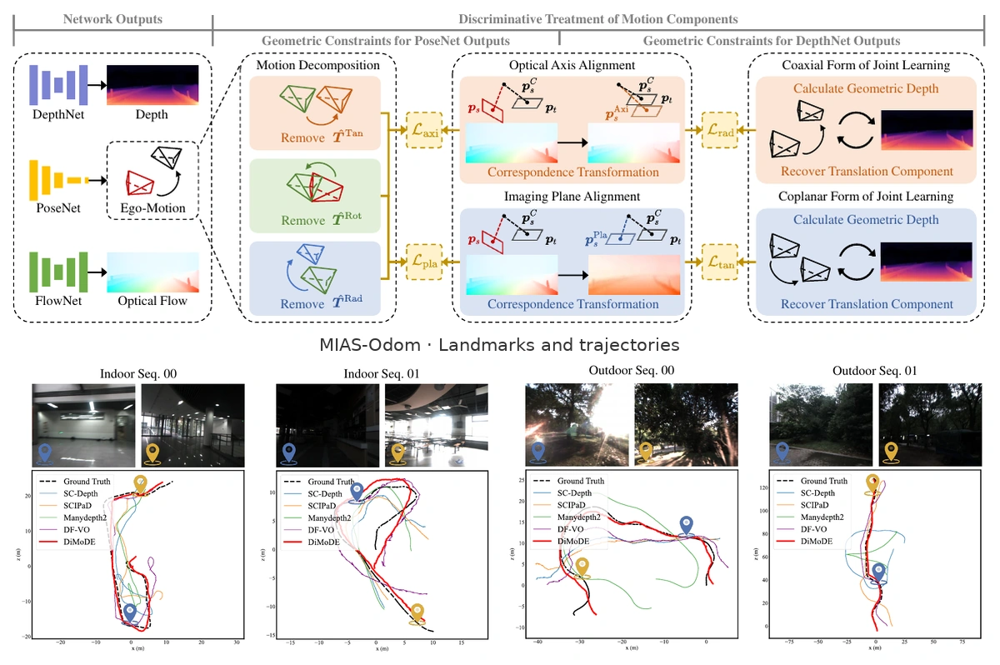
T-PAMI, 2026
Distinct geometric constraints on motion components improve joint learning of depth and ego-motion, including in challenging environments.
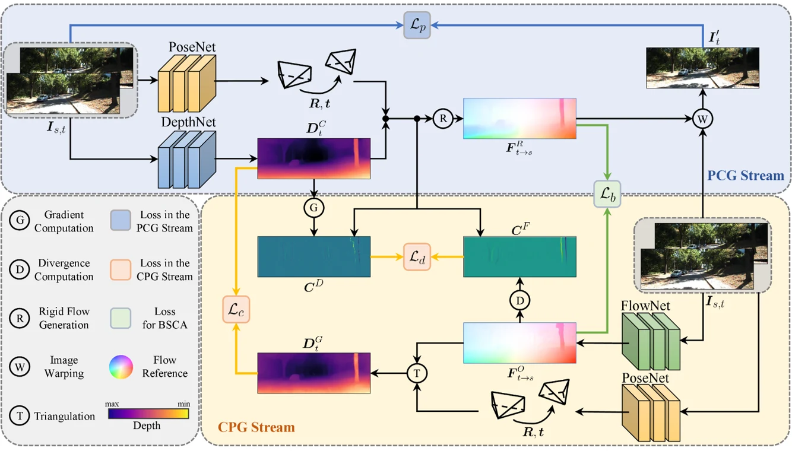
T-IP, 2025
Dense correspondence priors provide explicit geometric supervision for robust unsupervised monocular depth estimation.
* Equal contribution.
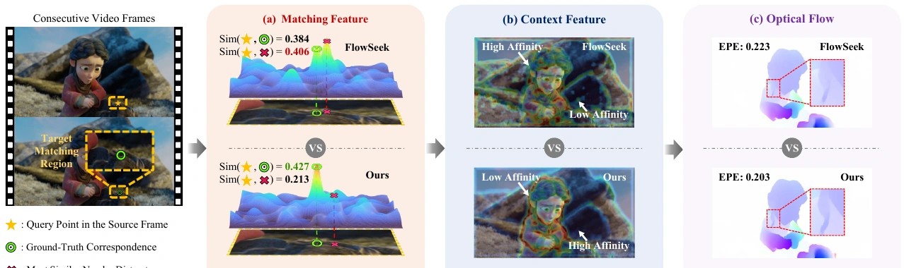
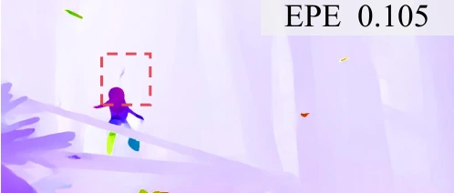
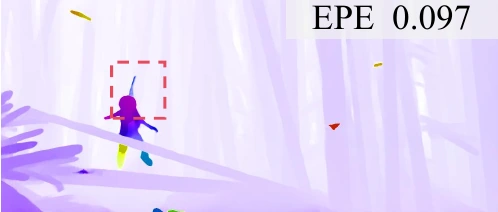
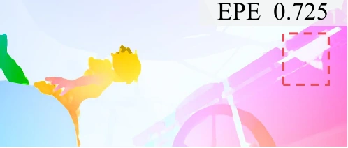
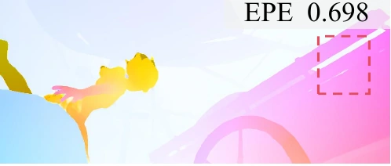
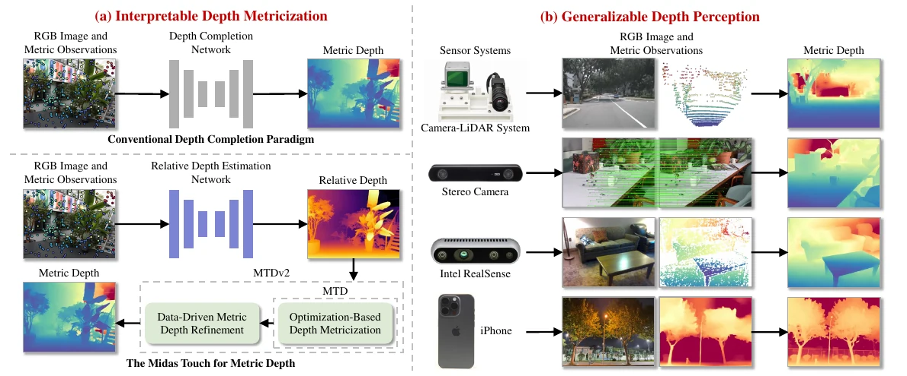
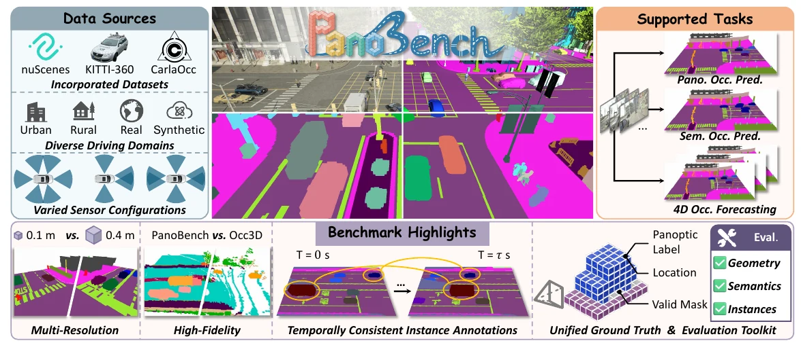
arXiv preprint, 2026
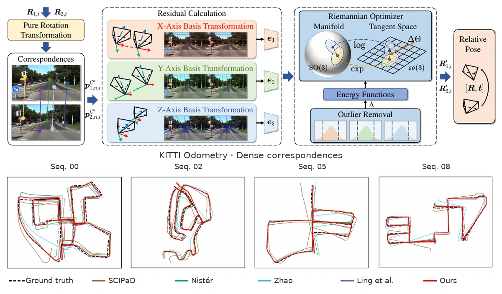
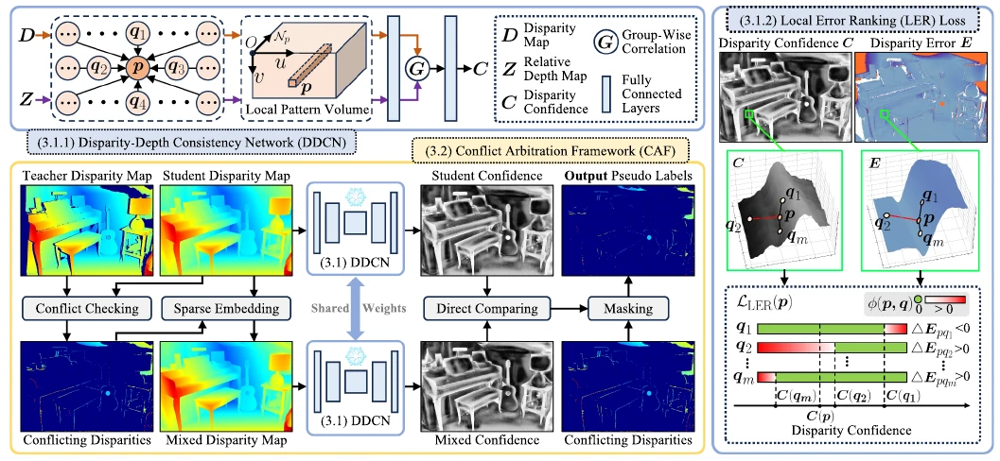
Information Fusion, 2026
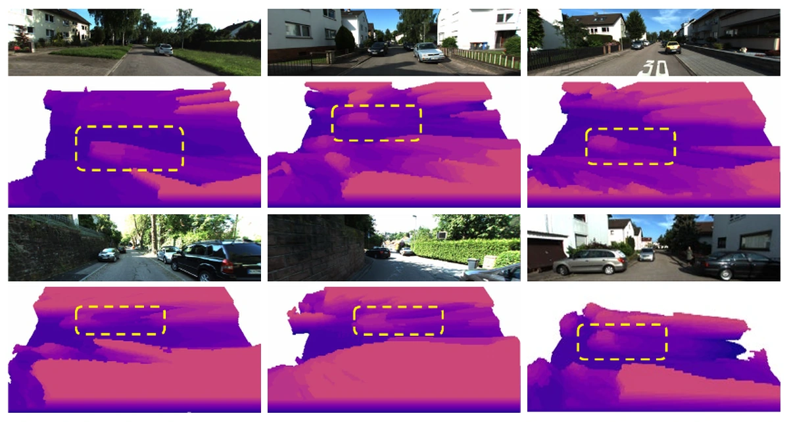
| 2024.09 – Present | Tongji UniversityPh.D. in Intelligent Science and Technology Advisor: Prof. Rui Fan |
|---|---|
| 2020.09 – 2024.07 | Tongji UniversityBachelor’s degree in Physics |
Journal Reviewer: T-IP, T-ASE, RA-L, IoT-J
Conference Reviewer: CVPR 2027, AAAI 2026/2027, ICRA 2025